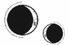

CAPÍTULO 55
Abrilis 1787
Kaine la llamaba con frecuencia.
A veces terminaba sus obligaciones a última hora de la tarde, pero la mayoría de las veces era ya pasada la medianoche. Si Helena no estaba trabajando en el hospital, se quedaba en el laboratorio hasta que el anillo se activaba.
Había muchos edificios abandonados. Kaine había dado con uno que tenía una azotea grande y despejada, y que además contaba con un ascensor que funcionaba. Helena no tenía que pasar por ningún puesto de control para llegar.
En ocasiones, Amaris ni siquiera necesitaba aterrizar.
Helena esperaba en el centro de la azotea y, silenciosa como un espectro, Amaris caía del firmamento. Kaine se echaba hacia delante y recogía a Helena. Al instante estaban en el aire, surcando el viento, volando por encima de los edificios sin que los vieran.
En cuanto aterrizaban, Kaine bajaba a Helena de la quimera y la examinaba de la cabeza a los pies.
—¿Te encuentras bien? ¿Te ha pasado algo? —preguntaba, a pesar de que Helena había notado la resonancia de Kaine bajo su piel por el camino y sabía que no estaba herida.
Helena jamás hubiera imaginado que se preocuparía hasta ese extremo. Siempre había sido consciente de lo rápido que llegaba al Reducto, de lo cuidadosamente que la observaba, pero no se había dado cuenta de lo profundo que le atravesaba el miedo hasta que dejó de ocultarlo.
Nada más entrar en la casa, Helena le permitía examinarla bajo la luz y extendía los brazos para demostrar que seguía en el mismo estado que la vez anterior.
—Estoy bien. ¿Ves? No tienes que preocuparte.
Aquella afirmación nunca parecía surtir efecto. Lo que le había sucedido a su madre había estado oculto, y Enid Ferron nunca se lo había contado todo, ya fuese porque no podía o porque quería ahorrarle el sufrimiento. Sin embargo, ese secretismo había resultado ser la peor opción. Kaine era igual que ella: se obsesionaba más con lo que desconocía que con cualquier otra cosa.
Helena lo miró a los ojos y le sostuvo la cara entre sus manos.
—Estoy bien. No me ha pasado nada.
Una vez que lo convencía de que no le ocultaba ninguna herida, la tensión de su cuerpo se relajaba. La abrazaba hasta que sentía el latido de su corazón retumbando contra el suyo.
«Tú le has hecho esto —se recordaba a sí misma cuando empezaba a impacientarse con aquel ritual—. Descubriste lo que le hacía vulnerable y te aprovechaste de ello».
Helena le recorría el cuerpo con los dedos para detectar alguna nueva herida antes de que él la volviera a besar. Sin embargo, Kaine solía esconderlas o ignorarlas como si no existieran, a menos que Helena las descubriera.
Las heridas de anulitio habían empezado a aparecer en los soldados heridos en batalla. A veces, Kaine acababa con algo de metralla incrustada en el cuerpo y, aunque a él le afectaba de forma leve, si entraba en su torrente sanguíneo, podía ralentizar su regeneración durante horas, a menos que Helena interviniera.
Nunca había sanado ni nunca sanaría a nadie del modo en que curaba a Kaine: en sus brazos, pegada a su cuerpo. Lo sobornaba para que cooperase dándole besos con los labios separados sobre los hombros, en las manos, en la cara, y, mientras tanto, su resonancia buscaba todos los lugares que estaban heridos y revisaba su cuerpo meticulosamente. Hasta que Kaine se hartaba, le sujetaba las manos, la empujaba sobre la cama y le hacía el amor lentamente. Siempre lo hacían a un ritmo que les hacía perder la cabeza.
Kaine la miraba a los ojos hasta que Helena sentía el roce de sus mentes.
—Eres mía. Eres mía. —Repetía esas palabras una y otra vez—. Dilo. Di que eres mía.
Kaine entrelazaba sus dedos con los de ella, presionaba frente con frente y, en ocasiones, le temblaba todo el cuerpo. Helena lo abrazaba para darle seguridad.
—Te lo prometo, Kaine. Siempre seré tuya.
Había un miedo posesivo en la forma en la que la tocaba, como si creyera que esa sería la última vez que la vería.
Si Kaine no la llamaba, el tiempo se alargaba, y Helena empezaba a sentir un miedo infinito hasta que el anillo volvía a arder.
Entonces era ella quien, desesperada, exigía saber si él se encontraba bien. Las noches que dormía sola, tenía pesadillas en las que alguien lo mataba. A veces desaparecía para siempre; otras, se convertía en un liche, o lo descubrían y lo apresaban. No sabía cuál de esas opciones le daba más miedo.
—Ten cuidado. —Era lo que siempre le decía antes de dejarla en alguna azotea. Le sostenía la cara entre las manos y lo miraba a los ojos—. No mueras.
Kaine inclinaba la cabeza y le besaba el interior de la muñeca o la palma de la mano sin despegar esos ojos plateados de su rostro.
—Eres mía. Siempre volveré a por ti.
Siempre lo hacía.
Sin embargo, con el paso de los días parecía que las probabilidades de éxito se volvían en su contra. Cada vez era más difícil. La guerra estaba al borde de la catástrofe. No estaba segura de hasta dónde la llevaría el sello y su propia determinación antes de que todo se viniera abajo.
Estaba caminando en el filo de una navaja.
Cuando dormía, Helena contemplaba su rostro y rezaba para que sobreviviera. Lo haría posible. Se marcharían lejos, más allá del mar, donde nadie pudiera encontrarlos jamás. Se prometía a sí misma que hallaría la forma de hacerlo, y se lo prometía a él: habría un después de la guerra.
—Yo cuidaré de ti. Te lo juro, Helena, siempre voy a cuidar de ti. —Helena lo escuchaba mascullar esas palabras contra su piel o su cabello. Un susurro apenas audible. Había días en que la compulsión se agravaba.
Aquella noche lo escuchó repetirlo una y otra vez. Normalmente paraba al cabo de un rato, pero esa vez no lo hizo. Helena levantó la cabeza y le sostuvo el rostro entre las manos para obligarlo a que la mirara a los ojos.
—Kaine, estoy bien. No va a pasarme nada.
La contempló con la misma expresión entre la amargura y la resignación, la que había adoptado cuando la entrenaba y cada vez que se daba la vuelta para marcharse, como si se estuviera preparando, esperando lo inevitable.
La guerra era una jaula sin escapatoria.
Aun así, se calmó y descansó la cabeza sobre su pecho, escuchando el latido de su corazón envuelto en sus brazos. Helena le pasó los dedos por el cabello y, aunque estaba callado, notó que seguía repitiendo las palabras.
—Háblame de tu madre, Kaine —le pidió tras un instante de duda—. Cuéntame todo lo que no pudiste decirle a nadie.
Kaine permaneció callado. Ella deslizó los dedos hasta sus hombros y recorrió las cicatrices entrelazadas del sello.
—Puedes contármelo. Te ayudaré a llevar la carga.
Siguió en silencio tanto tiempo que Helena se preguntó si se habría quedado dormido. Pero entonces giró la cabeza, lo justo para que ella pudiera ver su perfil.
—Nunca había visto cómo torturaban a alguien —dijo al fin—. Ella fue… la primera persona que torturaron ante mis ojos. Él… —Le tembló la barbilla mientras buscaba las palabras—. Experimentaron con ella. Aunque ella ni siquiera estaba… No había hecho nada.
A medida que hablaba, fue abriendo los ojos y contempló la habitación con la mirada perdida. Helena también lo vio: él, con dieciséis años volviendo a casa para las vacaciones de verano. Entró sin saber que estaba a punto de enfrentarse a una pesadilla de la que jamás podría escapar.
—Pensé… —Su voz se volvió más joven, más juvenil—. Durante un tiempo, pensé que, si asesinaba al principado rápidamente, ella se recuperaría. Que podría arreglarlo todo. Pero, cuando regresé, no era más que… una sombra de sí misma. Creo que… creo que intentó aguantar el verano, que se mostró valiente mientras estuve presente, pero… No duró ni un mes. —Las palabras sonaron graves, temblorosas.
Helena le pasó los dedos por el cabello. Kaine cerró los ojos y bajó la cabeza; se encogió sobre sí mismo.
—Cuando asesiné al principado, tardé más de un día en regresar, y ellos ya sabían lo que había hecho. Escucharon los rumores, pero no la soltaron hasta que les entregué ese maldito corazón, que todavía latía. Mi madre no paraba de sufrir ataques; se desplomaba en el suelo, dejaba de respirar o se mecía murmurando sin parar. Hice que varios médicos la revisaran, pero todos dijeron que no le pasaba nada, que simplemente era de constitución débil y tenía tendencia a la histeria. Me recomendaron que la ingresara en una clínica o le suministrara tónicos e inyecciones que la dejaban aletargada.
Helena le apretó la mano y siguió recorriendo el sello de la espalda con los dedos. Calculador, astuto, devoto, tenaz, implacable, eficaz, resuelto y severo.
Todo para vengar a su madre. Como castigo por todos los momentos en los que creía haberle fallado.
—Lo siento mucho, Kaine.
Se sumió en el silencio. Después, cerró los ojos y tomó aire con dificultad.
—Entonces… —se le quebró la voz—. Entonces… —le falló de nuevo— se puso mejor. Creí que tal vez se recuperaría, pero yo… yo… Habíamos tomado un nuevo distrito. Había una lista de familias con las que debíamos dar ejemplo. Padre, madre, dos hijas. Cuando asesinamos a los padres, los inmarcesibles reanimaron a la madre y la obligaron a matar a la hija mayor. Se suponía que yo debía hacer algo parecido con el padre y la hija menor. Era muy pequeña, llevaba dos trenzas con lacitos. Había una tarta de cumpleaños. Creo que era el suyo. Durant la arrastró por el pelo y me la puso delante… Sabía lo que querían que hiciera, pero salí corriendo. —Tragó saliva—. Reservé dos pasajes en un barco. Pensé que mi madre y yo podríamos huir por el mar, y que no se daría cuenta de que no podría acompañarla hasta que fuese demasiado tarde. Pero, cuando fui a buscarla, ellos se me habían adelantado. Traían el cadáver de la niña.
—Oh, Kaine… —Helena estaba tan horrorizada que no fue capaz de decir nada más. Él le apretaba la mano tan fuerte que temió que le saldrían moratones ahí donde se entrelazaban sus dedos.
—Traté de buscar una forma de escapar con ella. —Le cambió la voz, fue adquiriendo el tono habitual conforme la historia se adentraba en su vida. Empezó a emplear un tono duro y controlado—. Lo tenía todo preparado, había previsto cada detalle, cada contingencia, pero mi madre no quiso irse sin mí. Me planteé obligarla, drogarla y subirla al barco para alejarla de allí, pero me daba miedo que volviera para buscarme, y no quería que la encerraran. No deseaba ser yo quien volviera a enjaularla. —Su voz se vació de toda emoción—. Si no hubiera vuelto a casa aquella noche…, aún seguiría con vida. No sé por qué lo hice.
Se quedó callado. Helena se removió bajo su cuerpo y se incorporó. No podía mirarlo sin sentir una punzada de dolor en el pecho. Le rozó suavemente la frente.
—Kaine… Yo no soy tu madre.
El chico se encogió y abrió la boca para replicar, pero Helena siguió hablando para que no pudiera interrumpirla.
—La Llama Eterna no me hará daño si fracasas en una misión. No van a torturarme ni a ponerme en peligro para castigarte. No soy el rehén de nadie. Participo en la guerra por decisión propia. No estoy hecha de porcelana y no pienso romperme. Por favor… —Le acarició el pómulo con el pulgar—. Confía en mí, por favor.
Kaine negó con la cabeza.
—Déjame sacarte de aquí. Te juro que no afectará a mi colaboración con la Resistencia. Pero déjame sacarte de aquí.
—No pienso huir mientras los demás siguen luchando. Podemos hacerlo juntos. Permíteme ayudarte. No tienes que cargar con todo tú solo.
La tristeza inundó sus ojos.
—No puedes pedirme que huya de la guerra.
Kaine hizo un gesto amargo.
—¿Por qué no? ¿Es que no has hecho bastante por ellos? Te vendieron. ¿Qué habría sucedido si…? —No terminó la frase, incapaz de mirarla a los ojos—. ¿Qué habría sucedido si hubieran recibido una oferta de alguien que quisiera aprovecharla de verdad? Habrías accedido igualmente… y, si yo no te hubiera entrenado, habrías muerto al rescatar a Holdfast.
—Y yo accedí a hacerlo. A todas esas cosas. Nadie me obligó en ningún momento. No podemos elegir cuándo hemos hecho suficiente y dejar a los demás atrás para que sufran las consecuencias. En una guerra como esta, no hay civiles. Si ellos ganan —extendió las manos—, todos perderemos.
Kaine apretó los dientes, y Helena supo lo que quería decir: que le daba igual. Nunca le había importado que sobreviviera nadie más que ella.
Helena dejó escapar un suspiro de pena y bajó la cabeza hasta enterrarla en su hombro. Él la rodeó con sus brazos.
Casi se había dormido cuando oyó el susurro de su voz:
—Yo cuidaré de ti. Te lo juro, siempre voy a cuidar de ti.
Kaine era el único consuelo de Helena cuando la situación en la Resistencia empezó a deteriorarse.
Cuando por fin Lila recuperó su resonancia, la larga convalecencia parecía haberle arrancado parte de su vitalidad. Ya no era capaz de reponerse de la misma forma que antes, y las cicatrices de la cirugía que habían llevado a cabo en el pecho y en el hombro eran tan profundas que le limitaban el movimiento, por lo que necesitaba de una sanación constante y terapia para recuperar la movilidad.
Helena diseñó un tratamiento para ella, pero se la asignaron a otra de las sanadoras. Luc había exigido que Helena se mantuviera alejada de Lila al igual que de él mismo.
Ella se quedó sentada junto al escritorio de Pace cuando se lo comunicaron.
—Todavía tienes turnos en el hospital —dijo Pace.
—Cierto —repuso Helena sin emoción alguna—. Si está empezando a exigir cosas, supongo que Luc está más lúcido, ¿no?
Desde que trasladaron a Luc a sus aposentos privados, Helena no lo había visto ni había escuchado ni una palabra sobre él ni sobre su estado de salud, aunque el Consejo insistía en que se estaba recuperando.
Los labios de Pace esbozaron una mueca.
—Bueno, podríamos usar la palabra «lúcido», sí —carraspeó—. Estoy segura de que, con el tiempo, volverá a ser quien era. No te preocupes por él; ya tiene gente de sobra para eso. Tú cuida de ti misma, Marino.
Helena se limitó a asentir, aunque a la Llama Eterna no le sobraba el tiempo.
Luc era el pilar de la Resistencia. Sin él, todo se volvía cada vez más incierto. Crowther había empezado a depender más de Kaine, y lo usaba para sembrar información falsa y hacer sabotajes, como si el ejército de inmarcesibles fuera una máquina que había que desarmar pieza a pieza. Los sobres que contenían órdenes eran cada vez más gruesos.
Kaine nunca mencionaba lo que hacía, pero ella notaba que estaba a punto de quebrarse bajo la presión. Cada vez que la veía se comportaba con más desesperación.
A Helena le dolía verlo desgastarse bajo el peso de todo lo que debía mantener y producir para ambos bandos, mientras ella estaba atrapada en el Cuartel General como un animal enjaulado.
Al no poder salir a recolectar, ocupaba su tiempo con una nueva investigación. Con Shiseo como jefe de laboratorio, estaba intentando perfeccionar la anulación de la alquimia. Era algo que había solicitado el Consejo, ya que los inmarcesibles eran prácticamente imposibles de capturar y mantener encerrados, pero con esta anulación podrían conseguirlo. Gracias a Kaine, Helena sabía que el anulitio interfería con las habilidades y la regeneración de los inmarcesibles de la misma forma que lo hacía con cualquier alquimista.
Shiseo había diseñado unos grilletes de anulitio que podían anular la alquimia de forma focalizada. Se cerraban alrededor de la muñeca y hacían que la resonancia se diluyera como si fuese energía estática.
Helena lo puso a prueba: cerró uno alrededor de su muñeca, flexionó los dedos y lo deslizó por el brazo. Cuando le llegó al codo, descubrió que podía vencer la interferencia. Negó con la cabeza.
—No anulan la resonancia completamente.
Se lo quitó e inspeccionó el interior, que Shiseo había recubierto de anulitio.
—Para eliminarla por completo, creo que tendremos que emplear algo interno —explicó—. Si el anulitio estuviera envuelto en cerámica, evitaríamos la corrosión y la biointerferencia. Pero, si lo metemos en un tubito y lo introducimos en la muñeca aquí… —señaló con el dedo el espacio que había entre el radio y el cúbito—, el grillete iría unido a este punzón supresor que quedaría fijo mediante la alquimia. Seguro que así no queda ni rastro de resonancia.
Shiseo parecía tan perturbado que Helena comprendió que lo que estaba proponiendo iba más allá de su función práctica.
Hablaban de diseñar grilletes para los inmarcesibles, que se ocultaban bajo sus yelmos y sus muertos. Y, cuando pensó en Kaine, que probablemente acabaría prisionero en algún momento, sintió que el estómago se le revolvía. Sacudió la cabeza.
—No he dicho nada. Es demasiado enrevesado. No tenemos que anular la resonancia de esa forma.
—Funcionaría.
Helena negó de nuevo.
—No es necesario. Este diseño nos vale.
En ocasiones, el anillo de Helena se activaba dos veces seguidas y, cuando eso sucedía, Amaris llegaba y Kaine prácticamente se derrumbaba de su lomo. Otras veces, Amaris aparecía sola. Helena se subía al lomo de la quimera y se agarraba al arnés, mientras el viento las azuzaba en todas direcciones. Después se dirigían a las entrañas de la ciudad, a algún sótano o edificio destrozado, o también a veces a un callejón, y allí encontraba a Kaine. Solía tener algún trozo de metralla de anulitio en el cuerpo, tan incrustado que no podía extraerlo.
Helena había aprendido a tener siempre llena la bolsa con instrumental médico, vendas y todo tipo de medicinas. Conforme los ataques de anulitio se volvían más eficaces, había que emplear más a menudo la cirugía. Se acostumbró a operar de forma manual con una antorcha eléctrica como única fuente de luz.
Kaine no permitía que lo dejase inconsciente. Quería mantenerse lúcido por si aparecía alguien, aunque lo más habitual era que estuviese desvariando, con los ojos plateados vidriosos, y mascullando entre dientes:
—Estoy bien… Apenas lo noto. No te preocupes. Dentro de poco nos iremos de aquí… Ya lo tengo todo pensado. Solo… solo un poco más.
Helena se sentaba con su cabeza en el regazo, le sostenía las manos y le cantaba en voz baja hasta que lograba estabilizarlo. El anulitio hacía que su recuperación fuese mucho más lenta de lo normal. Cuando perdía demasiada sangre, quedaba flotando al borde de la consciencia o empezaba a temblar hasta que entraba en shock. Entonces ella le pasaba los dedos y la resonancia por las manos, sin dejar de disculparse.
«Tú lo estás matando. Tú lo estás matando. Esto es culpa tuya».
Solo se permitía llorar por él cuando caía inconsciente y no podía verla. Le cogía las manos entre las suyas y trataba de arreglarlo.
—Lo siento. Lo siento. Lo siento —repetía una y otra vez.
Antes de que recobrara la lucidez, se enjugaba las lágrimas y limpiaba la sangre. En cuanto Kaine volvía en sí mismo, Helena notaba cómo se tensaba de inmediato, hasta que la veía y respiraba de nuevo.
En las noches más largas, Amaris se enroscaba detrás de Helena y le daba toquecitos con el morro a las manos inertes de Kaine. Ella se sentaba y le acariciaba la cara, sintiendo todos los latidos de su corazón. Entonces le prometía:
—Yo cuidaré de ti. Te lo prometo, siempre voy a cuidar de ti.